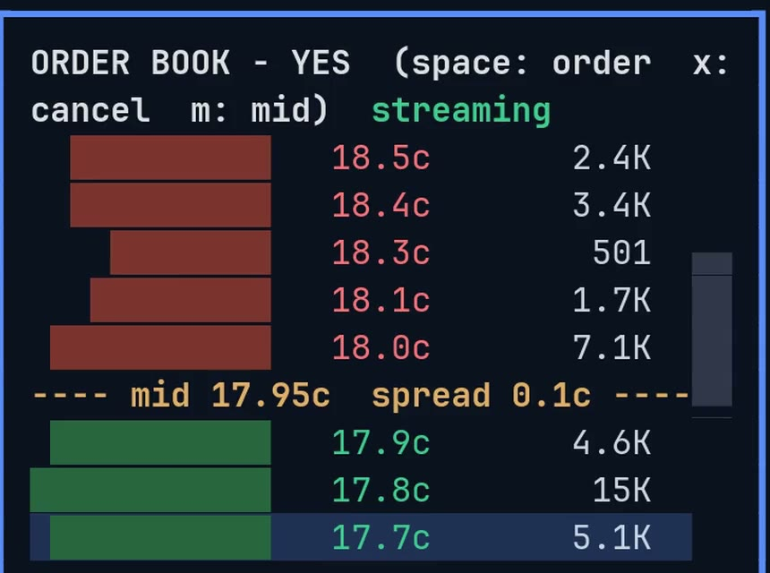
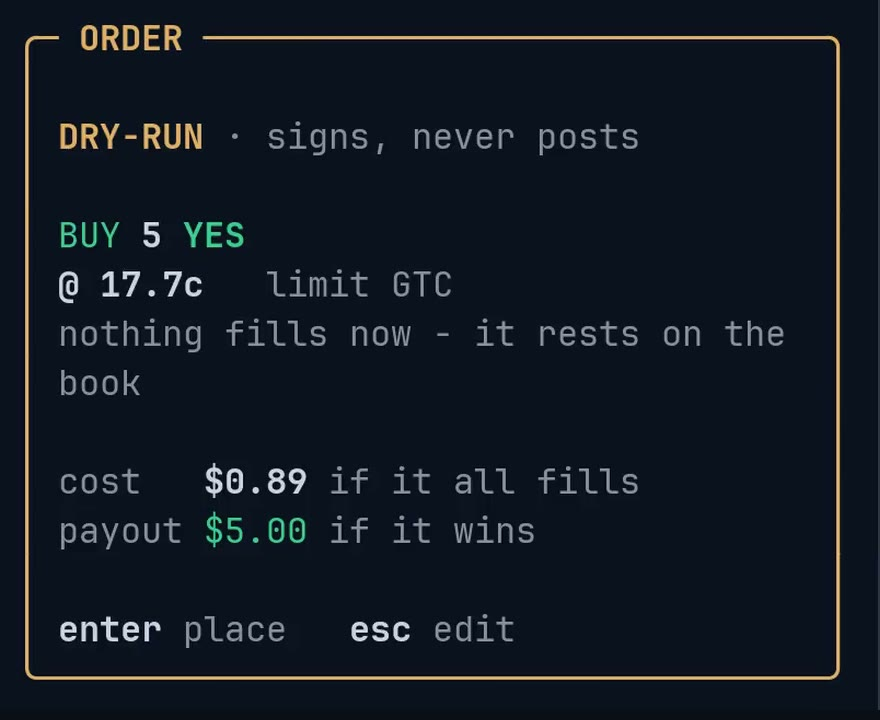
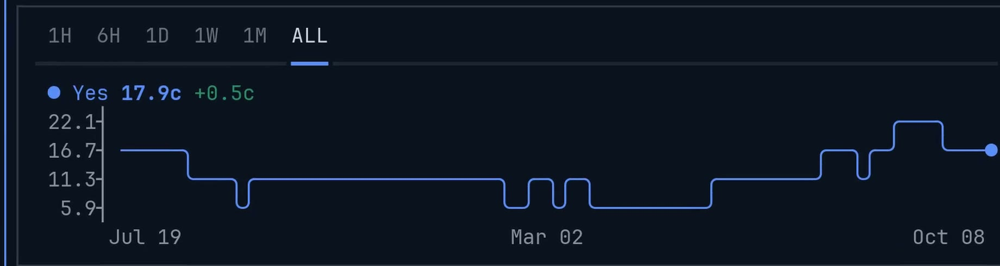
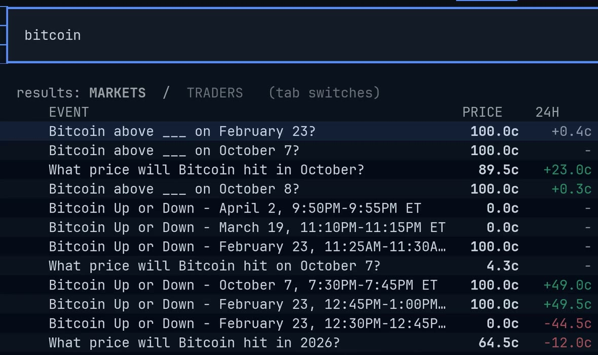

Polymarket in your terminal
v0.1.2macOS, Linux
uv
uv tool install polymarket-tui
Then runpolymarket-tui
Homebrew
brew install byronxlg/tap/ polymarket-tui
Then runpolymarket-tui
curl
curl -sSL https://raw.githubusercontent.com/byronxlg/ polymarket-tui/ main/ install.sh | bash
Then runpolymarket-tui
git
git clone https://github.com/byronxlg/ polymarket-tui cd polymarket-tui && uv sync && uv run polymarket-tui
New installs start in DRY: orders are never posted.
Order book

Order review

LIVE posts real orders. L switches between DRY and LIVE, and asks first. It opens in the mode you left.
Browse with no wallet. Add a wallet to trade
Price chart

Search

Keys
| ↑↓←→ | Move, open, back |
| space | Add to Watchlist, or switch the YES and NO order book |
| tab | Next pane |
| bs | Buy, Sell |
| / | Search |
| pw | Portfolio, Watchlist |
| L | DRY or LIVE |
| ?q | All keys, Quit |
uv
uv tool install polymarket-tui
Then runpolymarket-tui
Homebrew
brew install byronxlg/tap/ polymarket-tui
Then runpolymarket-tui
curl
curl -sSL https://raw.githubusercontent.com/byronxlg/ polymarket-tui/ main/ install.sh | bash
Then runpolymarket-tui
git
git clone https://github.com/byronxlg/ polymarket-tui cd polymarket-tui && uv sync && uv run polymarket-tui